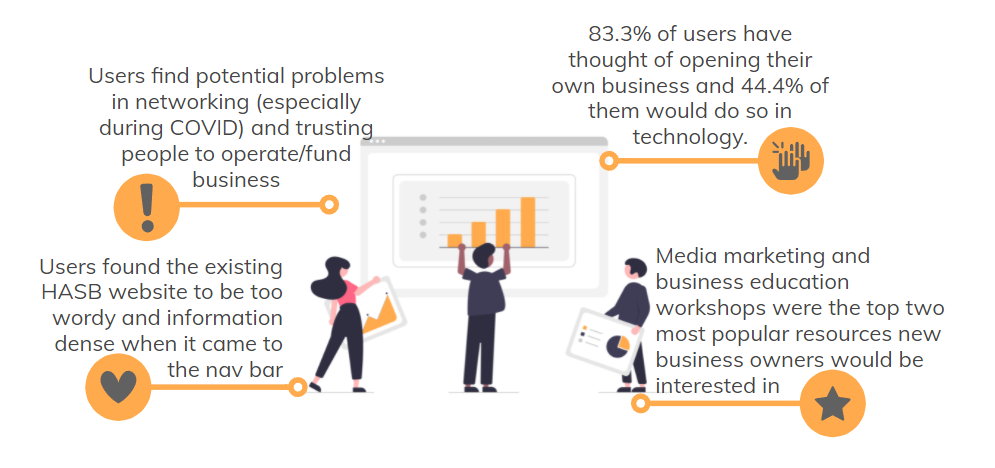
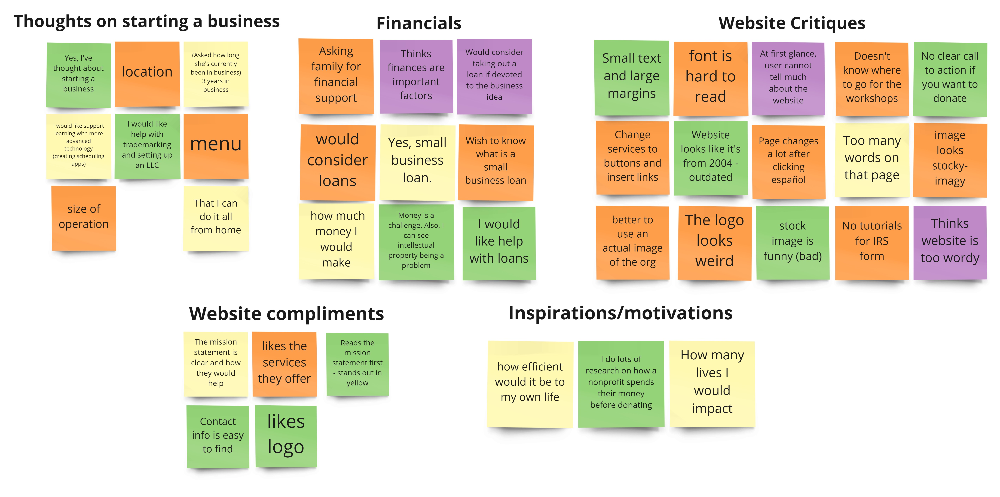
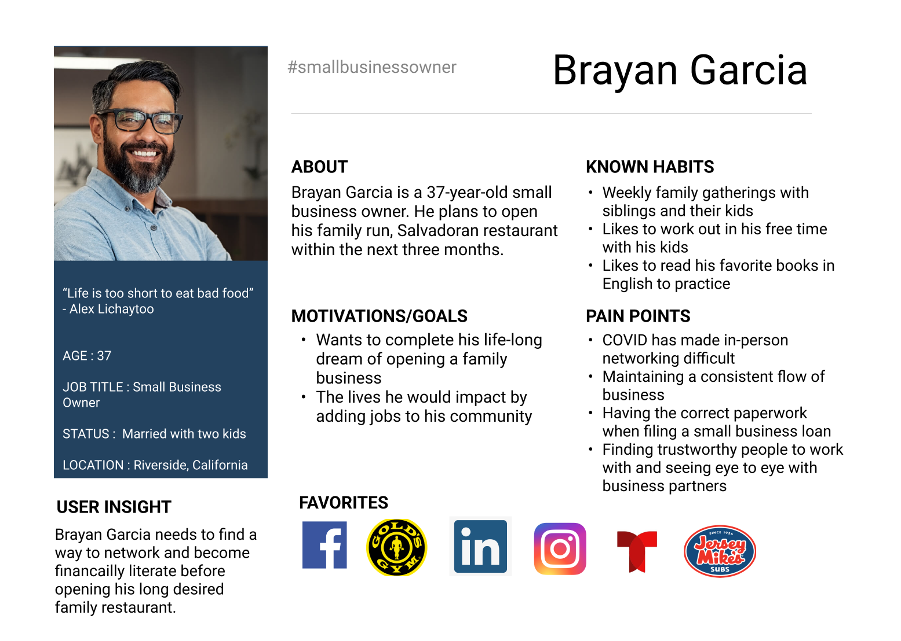
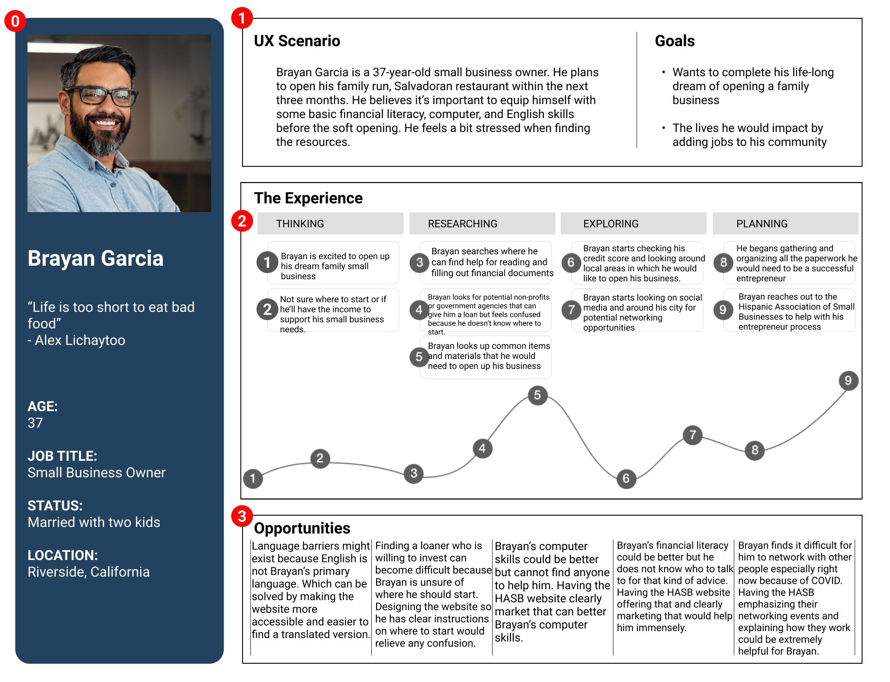
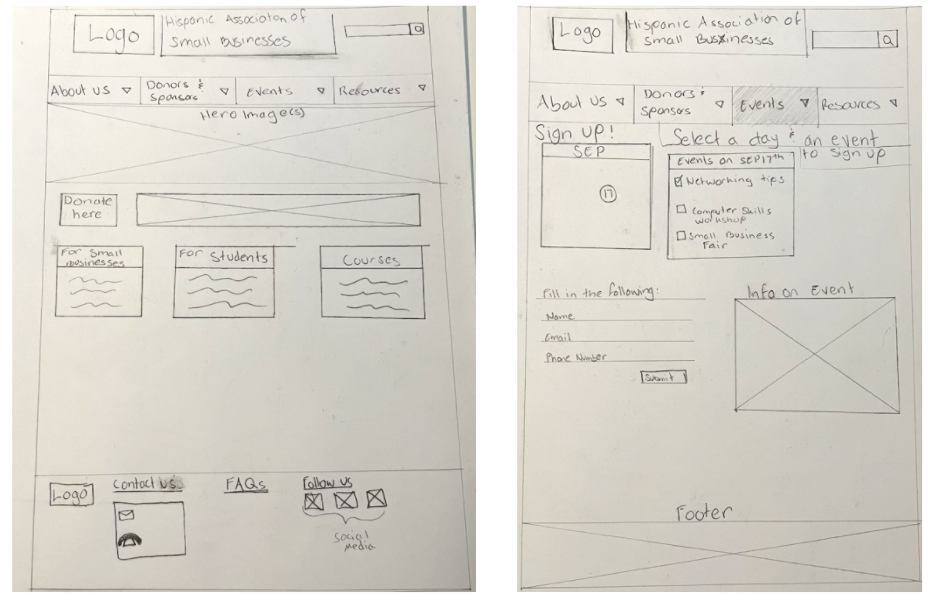
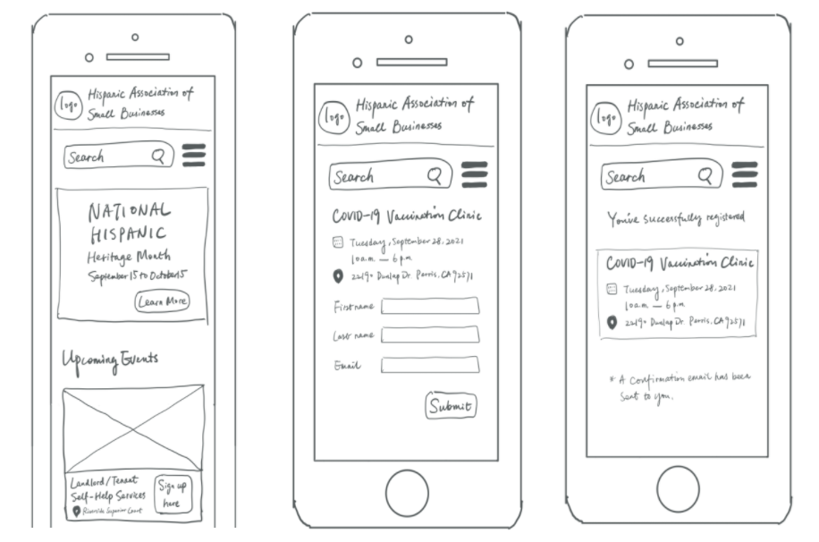
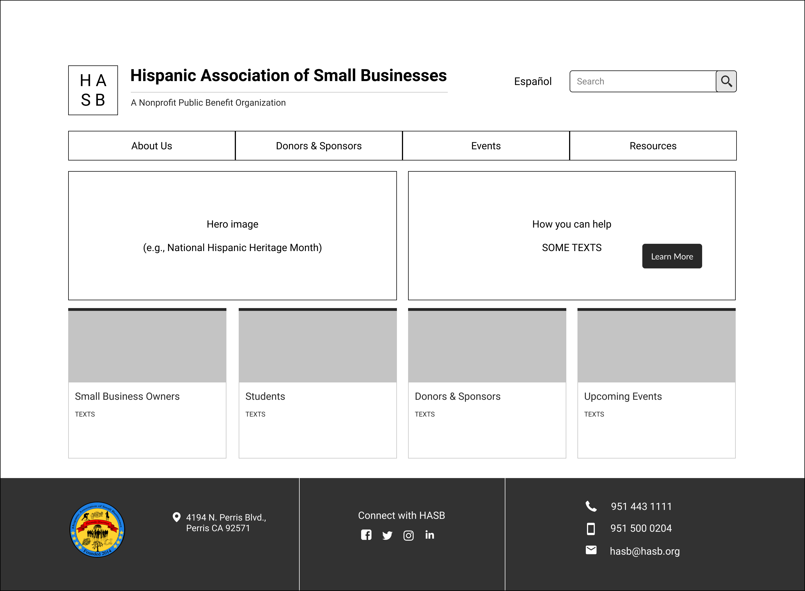
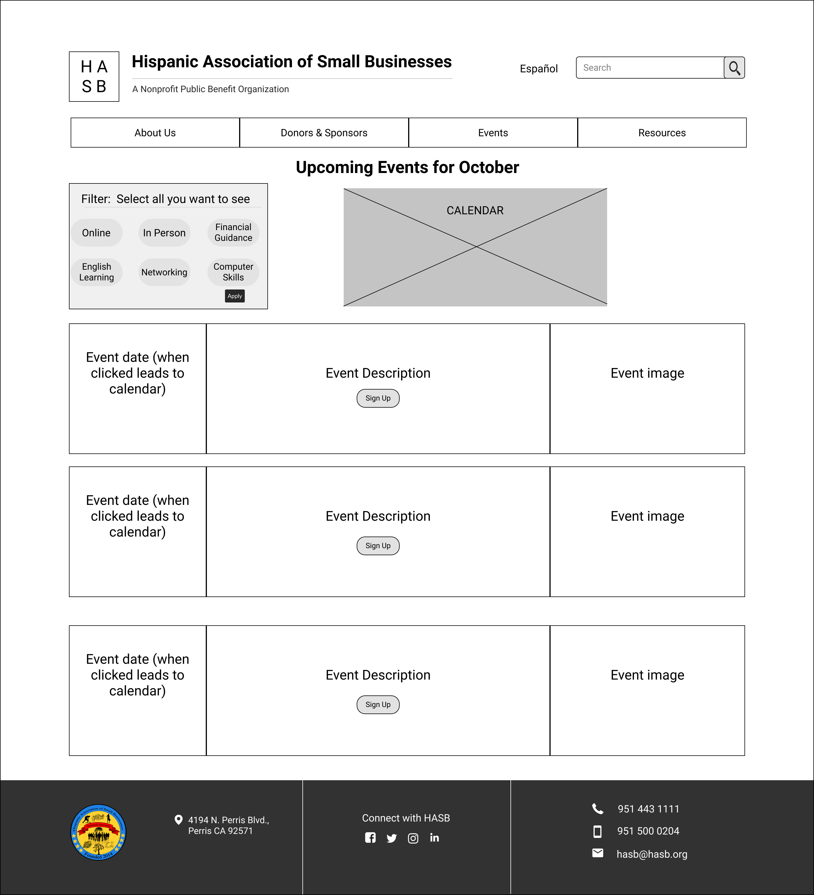

- Team
- Me
- My Role
- User Researcher and Designer
- Goal
- Create a user-friendly network for dog owners who want to meet new friends for themselves and their dogs
- Tools Used
- Figma, Adobe XD, Miro, Trello, GitHub, VS Code, Hotjar, Whimsical & Google Analytics.
The Challenge
Researching the User
- Competitor Analysis
- Survey & One-on-One Interviews
Click here to download my Competitor Analysis

- Affinity Diagram
Taking notes of what our users responded then sorting them into groups based off similarity helped us deduce the interests and opinions of users. Letting us tackle specific paint points that may be recurring.
Defining the User
- User Persona

- User Journey
Click here to download Brayan's User Journey

Ideating
- User Flow
Click here to download Brayan's User Flow
- Pawpup Sitemap
Click here to download the redesigned Sitemap
Prototyping
- Sketching


- Low-Fidelity Prototype
- In our redesign we made it a point to better the navigation bar because the initial website was far too dense with options. Instead of having a primary then secondary navigation bar, it was just a primary navigation bar with over ten options to choose from. Ashereing to the paradox of choice, we simplified the navigation bar so they had less options available to choose from. Instead of wasting time on thinking about which to choose, they can see every option quicker and therefore get to their destination quicker.


- High-Fidelity Prototype
- After 6 usability tests with a mix of friends, family and other UI/UX design students we were able to iterate on our high fidelity version of the redesigned HASB website. We went with a neutral tone in the background to maintain a professional environment. As for buttons, we wanted them to have a call to action, therefore we made them a contrasting deep orange that is reminiscent of Cempoalxochitl or Marigold flower. The flower whose scent helps guide the dead back to Earth and to their families that Mexicans and other people who celebrate Day of the Dead use for the holiday (which was very near at the time of presenting this). Being Mexican myself, I felt the need to ensure this website was a safe space to those who would go on it seeking help. I also made a version of it translatable to Spanish and made sure that the button was easier to find on the website unlike the original website where it was difficult to find.
- Iterations
- After the navigation bar, another big redesign we wanted to make was to give it a proper footer. The information on the previous one looked like a long list of how you could contact them which was not the most appealing. We wanted to make the information more disposable and the ability to connect with them via social media easier by listing them. We simplified the types of information by their location, their social media, then how to contact them. The three categories being divided by lines so the user can discern between them and their uses.
Conclusions
This was my favorite project that I got to work on due to it being so close to home, literally because this place
was 30 minutes away from my house and symbolically because it was for my people. I felt that I had the most creative
freedom in thise website and felt that it had more of a personality while also maintaining a professional presentation.
One of the challenges that was recurring in all of my projects was scheduling time outside of class to work on it.
We were all once again in three different time zones so we had to make sure we got down and translated the times
correctly. It was also more difficult being able to meet because of this but nonetheless we pushed through.
As for future developments, I would like to allow users the option to create their own profile that way they can keep track
or get reminded of upcoming events as well as a record of events they have gone to before. After that, adding a feature
similar to linkedin where people can become connected in a work/social environment would be sought out. Mostly to create a
community that is oftentimes difficult to find when you are a minority.